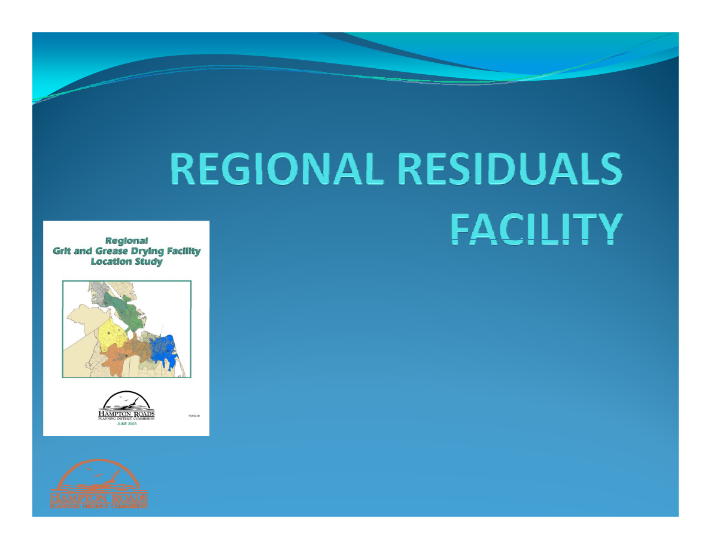
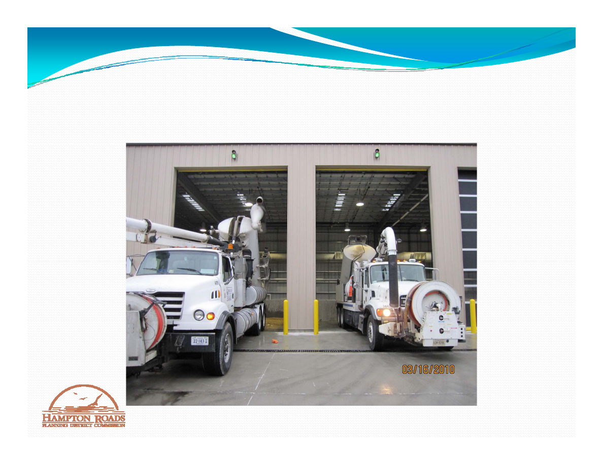
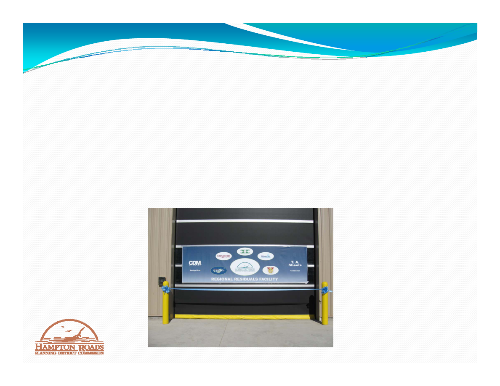

Presentation to
Hampton Roads Planning District Commission
John M. Carlock
Deputy Executive Director
March 17, 2010
1

GRIT AND GREASE
y
Grit and Grease is the sand, silt, grease, and liquid
material removed from the sewer system during
routine maintenance
routine maintenance.
y
Regulations require most of the liquid to be removed
before disposing of the solid portion in a municipal
before disposing of the solid portion in a municipal
solid waste landfill.
y
Liquid is disposed of through the wastewater
q
p
g
treatment system.
2

HISTORICAL OVERVIEW
y
Regional Grit and Grease Drying Facility – 2003
y
Regional efforts to:
y
Contract among HRSD, Chesapeake, Norfolk,
Portsmouth and Suffolk
y
Refine Quantities by Locality
y
Refine Quantities by Locality
y
HRSD Evaluates Feasibility
y
HRSD Consultant Designs Facility
RS Co su ta t es g s ac ty
y
HRSD Constructs Facility
y
Facility Opens March 2010
y
p
3
FACILITY CHARACTERISTICS
OCA O
RSD
d W
y
LOCATION: HRSD Nansemond Wastewater
Treatment Plant
y
DESIGN:
y
DESIGN:
y
25 trucks per week; over 7,100 wet tons annually
y
Five discharge bays – used on rotating basis
Five discharge bays used on rotating basis
y
Unattended operation with monitoring and digital
recording via Closed Circuit Television
y
Automatic scales, doors and traffic lights
y
Odor control – enclosed, activated carbon filtration and
integrated ventilation
integrated ventilation
4

FACILITY OPERATIONS – FIRST
FACILITY OPERATIONS FIRST
CUSTOMERS
6

NEXT STEPS
y
Operations – First Load – March 16, 2010
y
HRSD Policy – Proper disposal of sewer cleaning
id
l i di
l l
d HRSD Mi i
residuals is directly related to HRSD Mission
y
Payment Policy:
N h
f di
l f
id
l
d f
bli
y
No charge for disposal of residuals removed from public
collection systems within HRSD service area.
y
Open to all local governments within HRSD service
p
g
area.
y
HRSD evaluates facility for Peninsula Location
7

CONCLUSIONS
y
Positive example of regional cooperation.
y
Assists in meeting requirements of Regional Sanitary
S
O
fl
C
O d
d HRSD C
Sewer Overflow Consent Order and HRSD Consent
Decree.
8